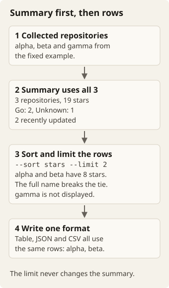

Cloud Resource Reporter (Python)
Build a Python CLI that lists the GitHub repositories of an organisation. The CLI calculates summary statistics and writes table, JSON, or CSV reports.
Glossary
This brief uses each term below with one meaning only.
- Organisation: the GitHub organisation whose repositories the command lists.
--orgtakes its name. - Repository: one item in the array that the API returns. The command keeps only some of its fields.
- Full name: the organisation name and the repository name together, for example
example-org/alpha. - Page: one API response. Each request asks for 100 repositories per page.
- Link header: the response header that contains the pagination URLs.
- Next link: the URL marked
rel="next"in the Link header. If it is absent, there are no more pages. - Rate limit: the number of requests that GitHub accepts in a time window. Responses report the remaining count and the reset time in headers.
- Token: an optional GitHub credential. The core command does not need a token.
- Session: one
requests.Sessionobject. The command sends every request through it. - Local API: the HTTP server that your tests start on
127.0.0.1. It replaces GitHub in tests. - Summary: the statistics for all collected repositories: counts, stars, languages, and recent updates.
- Displayed rows: the repositories that the report displays after sort and limit.
- Report: the complete output of one run, in one output format.
- Output format:
table,json, orcsv.--formatselects it. - Stretch item: an optional requirement. The core command is complete without it.
The command
uv run cloudreport repos --org kubernetes
uv run cloudreport repos --org hashicorp --sort stars --limit 20
uv run cloudreport repos --org prometheus --format json
uv run cloudreport repos --org grafana --format csv > repos.csvUse requests for HTTP and pytest for tests. Use the Python standard library for all other work. Start with a sequential HTTP client. Test it against a local API. The live command reads public GitHub data. It needs internet access, but no account or token. Do not put live requests in your test suite.
| Flag | Meaning |
|---|---|
--org | Required. One organisation name, not a URL or an owner/repository pair. |
--format | Default: table. table, json, or csv. |
--sort | Default: stars. stars, forks, and updated sort in descending order. name sorts in ascending order. Break ties by full repository name, in ascending order. |
--limit | Default: 20. The maximum number of displayed rows. Zero displays all rows. Negative values are errors. Always fetch all pages before you apply the limit. |
--timeout | Default: 30. A positive integer number of seconds for each HTTP request. requests applies this time to the connection, and then to each read of the response. It is not a limit for the full request. |
Use these exit statuses:
- 0: the command wrote a complete report.
- 2: the arguments are invalid.
argparseuses this status for its own errors. - 1: a fetch, cancellation, or output error occurred.
Write reports to stdout. Write diagnostics to stderr. A failed fetch must leave stdout empty, even when earlier pages succeeded.
The core path is the first four stages: fetch one page, fetch the remaining pages, calculate the report, and write the output. If your time is short, do those stages first. The failures stage and all stretch items are optional.
Start a workspace
Choose Workspace → Create workspace in the desktop app. The app writes the brief, the assistant instructions, Taskfile.yml and doctor.py. To use a folder that you already have, attach it and choose Add missing workspace files. The app does not replace your files.
You can read both supplied files below. If you use only the browser preview, copy them into your folder by hand.
Included file — Taskfile.yml (written by the app)
version: '3'
tasks:
doctor:
desc: Run read-only setup checks. Add "-- --online" to ask GitHub how many requests remain
cmds:
- python3 doctor.py {{.CLI_ARGS}}
test:
desc: Run your pytest suite
cmds:
- uv run pytest -q {{.CLI_ARGS}}Included file — doctor.py (written by the app)
The doctor uses only the Python standard library, so it runs before you install packages.
#!/usr/bin/env python3
"""Read-only checks for the Cloud Resource Reporter workspace.
This program installs nothing and changes no files. With --online it sends one
request to GitHub. That request does not count against your rate limit.
"""
import argparse
import json
import shutil
import subprocess
import sys
import urllib.request
from pathlib import Path
MINIMUM = (3, 11)
# FAIL when a required command is missing. WARN when an optional one is.
TOOLS = {'uv': ('FAIL', ['--version']), 'task': ('WARN', ['--version'])}
RATE_URL = 'https://api.github.com/rate_limit'
LOW = 10
def run(args, timeout=10):
"""Return (exit status, first line of output) of a command."""
try:
done = subprocess.run(args, capture_output=True, text=True, timeout=timeout)
except (OSError, subprocess.TimeoutExpired) as error:
return 1, str(error)
lines = (done.stdout or done.stderr).strip().splitlines()
return done.returncode, lines[0] if lines else ''
def rate_limit(timeout=10):
"""Return (remaining, limit) for requests without a token."""
request = urllib.request.Request(RATE_URL, headers={
'Accept': 'application/vnd.github+json',
'User-Agent': 'cloudreport-doctor',
})
with urllib.request.urlopen(request, timeout=timeout) as response:
core = json.load(response)['resources']['core']
return int(core['remaining']), int(core['limit'])
def main(argv=None, folder=None, version=None):
parser = argparse.ArgumentParser(description='Read-only setup checks.')
parser.add_argument('--online', action='store_true',
help='ask GitHub how many requests remain')
args = parser.parse_args(argv)
folder = Path(folder) if folder else Path(__file__).resolve().parent
version = tuple(version or sys.version_info[:3])
failed = False
def report(level, message):
nonlocal failed
failed = failed or level == 'FAIL'
print(f'{level:<4} {message}')
label = '.'.join(str(part) for part in version)
if version >= MINIMUM:
report('OK', f'python3: {label}')
else:
report('FAIL', f'python3: {label}. Use Python 3.11 or later.')
for tool, (level, flags) in TOOLS.items():
if not shutil.which(tool):
report(level, f'{tool}: not found on PATH')
continue
status, line = run([tool, *flags])
report('OK' if status == 0 else level, f'{tool}: {line}')
project = folder / 'pyproject.toml'
if not project.is_file():
report('NEXT', 'pyproject.toml: not found. Do the setup in README.md.')
else:
text = project.read_text(encoding='utf-8', errors='replace')
for package in ('requests', 'pytest'):
if package in text:
report('OK', f'pyproject.toml: lists {package}')
else:
report('NEXT', f'pyproject.toml: does not list {package} yet')
if args.online:
try:
remaining, limit = rate_limit()
except (OSError, ValueError, KeyError, TypeError) as error:
report('WARN', f'GitHub: no answer ({error}). Local tests work offline.')
else:
level = 'OK' if remaining >= LOW else 'WARN'
report(level, f'GitHub: {remaining} of {limit} requests remain this hour')
return 1 if failed else 0
if __name__ == '__main__':
raise SystemExit(main())Use Python 3.11 or later, uv and, optionally, Task. Run these commands in the workspace folder:
python3 doctor.py
uv init --package --name cloudreport
uv add requests
uv add --dev pytest
uv run cloudreport
python3 doctor.py --online- The first doctor run reports NEXT for
pyproject.toml, because the project does not exist yet. uv initkeeps theREADME.mdthat is already in the folder. It createspyproject.tomlandsrc/cloudreport/__init__.py.uv addrecords each package inpyproject.tomland installs it into.venv.uv run cloudreportcalls themainfunction insrc/cloudreport/__init__.py. The generated function prints a greeting.- The second doctor run sends one request to GitHub. It prints how many requests remain this hour. That request does not count against your rate limit.
Each doctor check prints one of these levels:
- OK: the check passed.
- WARN: an optional item is absent, or a count is low. You can continue.
- NEXT: the item does not exist yet. A later step creates it.
- FAIL: a blocking problem. The doctor continues with the other checks, then exits with status 1.
These parts are enough to start:
- a
mainfunction that returns the exit status - a function that fetches one page
- a function that calculates the report
- one function for each output format
Choose names and file boundaries as the program grows. The stages below include test cases. You write those tests yourself, in a tests folder. Run them with uv run pytest -q or task test. Vibe Learn has no automated checker for this project.
Hint: how the exit status leaves Python
The cloudreport command that uv installs calls sys.exit(main()). Return an integer from main. Give main an optional list of arguments, and pass that list to parse_args. Then a test can call main directly.
AI mentor prompt
I am on the overview and setup stage. Ask me to explain each flag and each exit status. Ask me why a failed fetch leaves stdout empty. Ask me what each setup command changed in my folder. Give one hint at a time. Do not edit files. Do not show the solution unless I ask for it.
Fetch one page
Make one GET request. Decode the response into typed Python values. Use this endpoint and these request headers:
GET https://api.github.com/orgs/{org}/repos?type=public&sort=full_name&direction=asc&per_page=100&page=1
Accept: application/vnd.github+json
User-Agent: cloudreport
X-GitHub-Api-Version: 2026-03-10Accept only an organisation name in --org. Reject these values:
- a blank value
- a value that contains whitespace
- a value that contains
/,\,?,#,:, or@
Pass the query values in the params argument of requests. Do not build the query string by hand. Make the API base URL a parameter, so that tests can use a local API.
Send every request through one session. Pass timeout on every request. requests has no default timeout.
Keep the repository ID, name, full name, stars, forks, language, description, and update time. GitHub calls the count fields stargazers_count and forks_count. Language and description can be null. JSON null becomes None in Python. Use str | None in a dataclass to keep that distinction. The report displays a missing language as Unknown. It displays a missing description as an empty string.
Decode updated_at with datetime.fromisoformat. The result is a timezone-aware datetime in UTC. A malformed timestamp or JSON body is a fetch error. Ignore unknown JSON fields. Check the HTTP status before you decode the repository array.
First test
- Write a pytest fixture that starts a local API on
127.0.0.1. - Make its handler record the request path, query parameters, and headers.
- Make the handler return one repository.
- Assert the recorded request. Then assert the decoded name, count, and timestamp of that repository.
- Add a case with an empty array.
- Add a case with a repository that has a null language and a null description.
Hint: separate fetching from printing
A function such as fetch_page(session, url, timeout) can return a list of repositories and the next-page URL. Let its caller do the formatting. Accept the session as a parameter, so that the command and the tests use the same code.
Hint: a local API in a fixture
The standard library has all the parts:
- Write a subclass of
http.server.BaseHTTPRequestHandlerwith ado_GETmethod. - Create
http.server.ThreadingHTTPServer(("127.0.0.1", 0), Handler). Port 0 lets the operating system select a free port. - Read the selected port from
server.server_address. - Run
server.serve_foreverin a daemon thread. yieldthe server to the test.- After the
yield, callserver.shutdown()andserver.server_close().
Keep the canned responses and the recorded requests as attributes of the server object. Then each test can set a response and read the requests. Give the handler an empty log_message method to keep the test output quiet.
References: List organisation repositories, the Requests quickstart, pytest fixtures and http.server. A live response on 16 November 2026 selected API version 2026-03-10. GitHub lists its versions in the version documentation.
AI mentor prompt
I am on the stage "Fetch one page". Ask me which --org values my code rejects, and why. Ask me why I check the HTTP status before I decode the array. Ask me how my dataclass keeps a null language different from an empty string. Give one hint at a time. Do not edit files. Do not show the solution unless I ask for it.
Fetch the remaining pages
Follow the URL marked rel="next" in the Link header of the response. Stop when it is absent. The number of returned rows does not tell you whether another page exists.
Link: <https://api.github.com/orgs/example-org/repos?page=2&per_page=100>; rel="next", <https://api.github.com/orgs/example-org/repos?page=4&per_page=100>; rel="last"
- Request page 1.
- Check the HTTP status. Decode the repository array. Keep the first copy of each repository ID.
- Read the Link header. Find the URL marked
rel="next". The number of rows does not decide. - If a next link exists, check it. Then go back to step 1 and request it.
- If there is no next link, the client has every page. Calculate the report.
- Write the report in one output format to stdout. Then exit 0. If the write fails, exit 1.
- If any page fails, stop. Write the error to stderr. Leave stdout empty. Exit 1.
response.links is the parsed Link header. It is a dictionary with one entry for each rel value. Apply these pagination rules:
- Fetch pages in order.
- Request the next link as it is. Do not add
paramsto it again. - Resolve relative links against the current page, with
urllib.parse.urljoin. - Do not follow redirects. Pass
allow_redirects=False. A redirect is then a non-200 response, and the command stops.
These two rules are stretch items:
- Allow only the configured API origin and the same organisation-repositories path.
- Reject a repeated next link.
Deduplicate repositories by ID. Keep the first observation of each ID. GitHub data can change between requests. Pagination does not give a transactionally consistent snapshot. Sorting by full name reduces movement caused by star or update changes. But repositories can still be added, deleted, or renamed during the run.
Tests to write
- Two pages: the first has a next link and the second has none. Assert that the client fetched both pages.
- A short first page still has a next link. A full final page has none.
- The header contains
prev,last, andnextin a different order. - An ID appears on both pages. The report contains it once, with its first values.
- Page two returns 500 or invalid JSON. Return an error and no partial report.
- Stretch item: a next link repeats a visited URL or points at another origin. Return an error without requesting it.
Hint: make the loop's state visible
Track the next URL, the visited URLs, and the IDs that you already collected. Fetch and check one page before you update those collections. Keep this loop separate from sorting and output limits.
Hint: which URL did requests send?
response.url is the URL that requests sent, with the query string from params. The URL that you passed for page 1 has no query string. To find a repeated next link, compare it with response.url of each visited page.
Reference: GitHub pagination.
AI mentor prompt
I am on the stage "Fetch the remaining pages". Ask me why the row count cannot tell me that another page exists. Ask me what response.links contains on the last page. Ask me what my loop tracks between pages. Give one hint at a time. Do not edit files. Do not show the solution unless I ask for it.
Calculate the report
Calculate these summary values:
- the total repository count
- the total stars
- the repositories per language
- the count of repositories updated within the last seven days
Use all collected repositories for the summary. Then sort and limit the displayed rows.
Read the current time once per run, with datetime.now(timezone.utc). Pass it into the calculation. Count timestamps from now - timedelta(days=7) through now, inclusive. Exclude future timestamps. Use ordinary string ordering for names and language labels. Use the full name to break numeric or timestamp ties.
Keep every datetime timezone-aware. Python cannot compare an aware datetime with a naive one. It raises TypeError.
A fixed example
The following is a constructed dataset. In tests, set now to 2026-09-23T12:00:00Z.
[
{"id":1,"name":"alpha","full_name":"example-org/alpha","stargazers_count":8,"forks_count":2,"language":"Go","description":"API, workers","updated_at":"2026-09-22T12:00:00Z"},
{"id":2,"name":"beta","full_name":"example-org/beta","stargazers_count":8,"forks_count":4,"language":null,"description":null,"updated_at":"2026-09-01T12:00:00Z"},
{"id":3,"name":"gamma","full_name":"example-org/gamma","stargazers_count":3,"forks_count":1,"language":"Go","description":"Queue tools","updated_at":"2026-09-20T12:00:00Z"}
]With --sort stars --limit 2, display alpha then beta. The summary is still 3 repositories, 19 stars, Go: 2, Unknown: 1, and 2 recently updated.

- The fixed example has 3 repositories: alpha, beta, and gamma.
- The summary uses all 3: 3 repositories, 19 stars, Go: 2, Unknown: 1, and 2 recently updated.
--sort stars --limit 2selects the displayed rows. alpha and beta both have 8 stars. The full name breaks the tie. gamma is not displayed.- All output formats use the same displayed rows: alpha, then beta.
Tests to write
Write test cases for these inputs:
- every sort mode
- ties
- a zero limit
- a limit larger than the dataset
- empty input
- timestamps exactly at the seven-day boundary and just outside it
- a future timestamp
Check that a change to the display limit never changes the summary totals. pytest.mark.parametrize runs one test function with many inputs.
Hint: test this without HTTP
Pass a list of repositories and a fixed time directly into the report function. sorted returns a new list, so the input keeps its order. Use a key function that returns a tuple. Put the value that decides first, and the full name second. For a descending number, negate it. collections.Counter counts the language labels.
AI mentor prompt
I am on the stage "Calculate the report". Ask me to calculate the summary of the fixed example by hand. Ask me why the display limit must not change the summary. Ask me how my code treats a timestamp exactly at the seven-day boundary. Give one hint at a time. Do not edit files. Do not show the solution unless I ask for it.
Write table, JSON, and CSV output
All formats use the same displayed rows. Only the presentation changes. The examples below use the fixed dataset and --sort stars --limit 2.
Give each format function a text stream parameter. The command passes sys.stdout. Tests pass io.StringIO.
Table
Repository report: example-org
Repositories: 3 (showing 2)
NAME STARS FORKS LANGUAGE UPDATED
alpha 8 2 Go 2026-09-22
beta 8 4 Unknown 2026-09-01
Total stars: 19
Languages: Go (2), Unknown (1)
Updated in last 7 days: 2Use UTC dates. Align the columns. You choose the spacing. Sort language labels alphabetically. str.ljust pads a cell to a width. Calculate each column width from the longest cell in that column.
JSON
{
"org": "example-org",
"summary": {
"total_repos": 3,
"total_stars": 19,
"languages": {"Go": 2, "Unknown": 1},
"updated_last_7_days": 2
},
"repos": [
{"name":"alpha","full_name":"example-org/alpha","stars":8,"forks":2,"language":"Go","description":"API, workers","updated_at":"2026-09-22T12:00:00Z"},
{"name":"beta","full_name":"example-org/beta","stars":8,"forks":4,"language":"Unknown","description":"","updated_at":"2026-09-01T12:00:00Z"}
]
}Use these field names and types. Write an empty array if there are no repositories. Write an empty object if there are no languages. Pretty-print the result with the indent argument of json.dumps. The order of object keys is not important. Your line breaks can differ from the example.
Keep timestamps in UTC RFC3339 format with a Z suffix. datetime.isoformat writes +00:00 for UTC. Use strftime to write the Z form.
CSV
name,full_name,stars,forks,language,updated_at,description
alpha,example-org/alpha,8,2,Go,2026-09-22T12:00:00Z,"API, workers"
beta,example-org/beta,8,4,Unknown,2026-09-01T12:00:00Z,The CSV output contains only a header and repository rows. Use the csv module to handle commas, quotes, and newlines in descriptions. Its default line ending is \r\n. Pass lineterminator="\n" to write the line endings of the example. For an empty organisation, write only the header.
Tests to write
- Decode the JSON output before you compare values.
- Parse the CSV output back into records with
csv.reader. - Check the row order and the totals in the table.
- Add descriptions that contain commas, double quotes, and newlines.
- Supply a stream whose
writemethod raisesOSError. Check that the command reports the error and returns 1.
A stream can fail after it writes some text. Report that failure on stderr. Exit 1. A successful fetch does not make a command with a failed write successful.
Hint: read CSV text that contains newlines
A quoted description can contain a newline. Do not split the output into lines yourself. Give csv.reader an io.StringIO that you create with newline="". The reader then joins the lines of one quoted field.
AI mentor prompt
I am on the stage "Write table, JSON, and CSV output". Ask me how my CSV output handles commas, quotes, and newlines in a description. Ask me what my command does when the stream fails after some text. Give one hint at a time. Do not edit files. Do not show the solution unless I ask for it.
Handle failures and cancellation
A one-shot report can stop and explain an API failure. The core command does not automatically retry or wait for a rate-limit window.
| Response or failure | Command behaviour |
|---|---|
| 401 | Report an authentication error. |
| 404 | Report that the organisation was not found or is inaccessible. |
| 403 or 429 with rate-limit details | Report the limit and any retry time that GitHub supplies. Stop fetching. |
| Other non-200 response | Report the status and a bounded excerpt of its message. A 403 without rate-limit evidence may be an access error. |
| Invalid JSON, interrupted body, timeout, or connection failure | Identify the failed page. Return the error. |
| Ctrl+C | Stop fetching. Write one line to stderr. Leave stdout empty. Exit 1. |
requests.RequestException is the base class for timeouts, connection failures, interrupted bodies and invalid JSON bodies. Catch it where you request a page. Do not catch Exception. A programming error must show its traceback.
Ctrl+C raises KeyboardInterrupt in the main thread. KeyboardInterrupt is not a subclass of Exception. Catch it by name in main.
Limit the error excerpt, for example to the first 4096 characters of response.text. Then an HTML error page does not flood the terminal.
Stretch item: the remaining count
Unauthenticated requests normally share an IP-based budget of 60 requests per hour. Read X-RateLimit-Remaining and X-RateLimit-Reset from responses. The reset value is a Unix timestamp. Retry-After supplies a delay in seconds. Secondary limits can occur with a nonzero remaining count. Missing or invalid headers should not crash the client.
- If a successful response reports fewer than ten remaining requests, write a warning to stderr.
- If the count is zero and the command needs another page, stop with an error.
- If there are no more pages, the report is complete and the command can print it.
Tests to write
Use local responses for each status row in the table. Assert that rate-limit errors never cause another request. Assert that no warning appears on stdout.
For the timeout row, do these steps:
- Call your fetch function directly with a short timeout, for example 0.2 seconds.
- Make the handler sleep for a longer time before it answers.
- Assert that the function raises your fetch error.
For the connection failure row, use a base URL with a closed port, for example http://127.0.0.1:1.
For Ctrl+C, do these steps:
- Use the
monkeypatchfixture to replacerequests.Session.get. - Make the replacement raise
KeyboardInterrupt. - Call
main. Assert that it returns 1 and that stdout is empty.
Hint: capture stdout and stderr in a test
The capsys fixture of pytest captures both streams. Call capsys.readouterr() after main returns. The result has an out attribute and an err attribute.
References: GitHub rate limits, API request guidance and Requests errors and exceptions.
AI mentor prompt
I am on the stage "Handle failures and cancellation". Ask me what my command does for each row in the failure table. Ask me why a rate-limit error never causes another request. Ask me why except Exception does not catch Ctrl+C. Give one hint at a time. Do not edit files. Do not show the solution unless I ask for it.
Run and review the command
uv run pytest -q
uv run cloudreport repos --org kubernetes --format table --limit 5
echo $?
uv run cloudreport repos --org kubernetes --format json --limit 5 > report.json
uv run cloudreport repos --org kubernetes --format csv --limit 5 > repos.csv
uv run cloudreport repos --org no-such-organisation-0000
echo $?Make the live calls after the local tests pass. Repository counts and timestamps will differ from the constructed example. Check the process exit status and the files. In PowerShell, read the exit status from $LASTEXITCODE.
Each live run uses one request for each 100 repositories. python3 doctor.py --online prints how many requests remain this hour. You run all tests in your terminal. Vibe Learn has no automated checker for this project.
Review questions
Why fetch every page when the limit is five?
The display sort may differ from the API order. The summary covers the whole organisation. If the command stops after five records, it could miss the highest-starred repository. It would also undercount the totals.
Why use a fixed time in tests?
A repository can cross the seven-day boundary between test runs. If you pass a time into the calculation, you can test that boundary. The test then does not depend on the clock of the machine.
Why pass a timeout on every request?
requests has no default timeout. Without one, a server that stops sending data blocks the command with no time limit. The timeout applies to the connection and to each read. A slow response that continues to send data can take longer than the timeout.
Would concurrent page requests help?
Each next URL arrives with the preceding page. More requests can encounter secondary limits. Start with sequential requests. For multiple organisations, a bounded ThreadPoolExecutor may help. Keep pagination sequential within each organisation. Sort the merged results before you print them.
Optional extensions
- Authentication: Read
GITHUB_TOKENfromos.environ. Send it as a bearer token only to the configured API origin. Keep the public-repositories filter. Exclude the token from errors and reports. - Caching: Save response bodies with their ETags. Send conditional requests. For a 304 response, read the cached body. Cache each page with its pagination information.
- Diff reports: Add repository IDs to the saved report format. Then compare reports by ID. Display added, removed, and renamed repositories, and changed counts.
- Multiple organisations: Add bounded concurrency with
concurrent.futures, cancellation, and tests with controlled handlers. - History: Save dated reports. Plot star changes from those observations. The repository endpoint gives the current count. It does not give a star-history series.
- Lint and types: Run
uvx ruff checkanduvx mypy src. Both commands download their tool on first use.
AI mentor prompt
I am on the stage "Run and review the command". Ask me the review questions one at a time. Ask me to explain the exit status of one live run. Give one hint at a time. Do not edit files. Do not show the solution unless I ask for it.